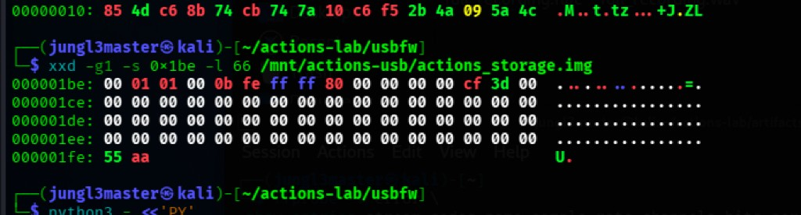
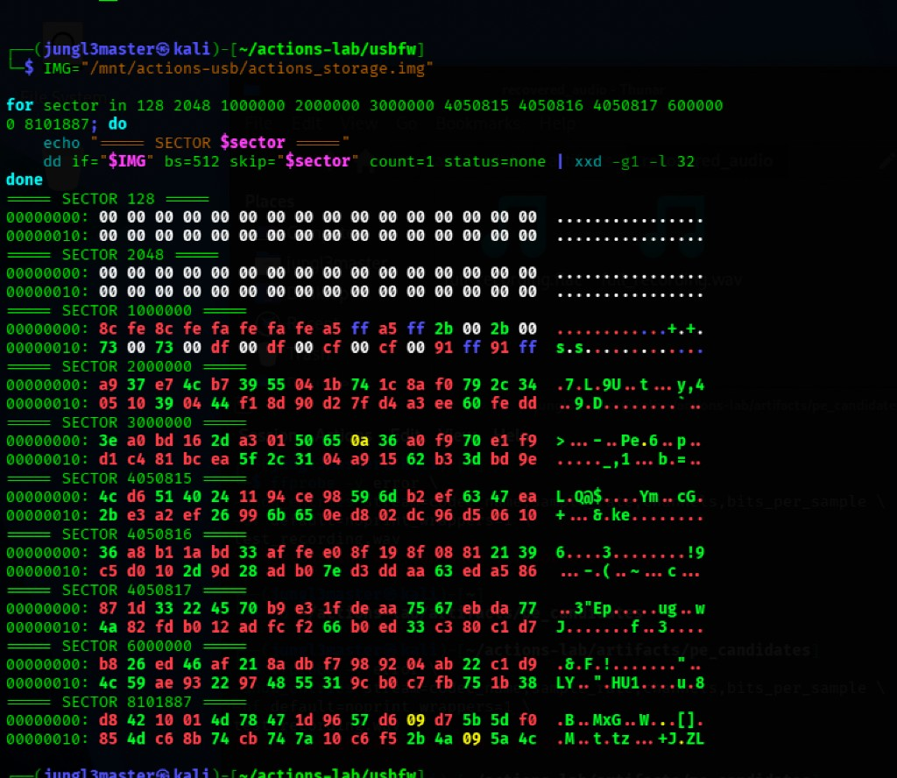
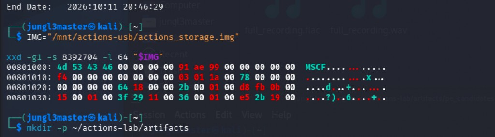
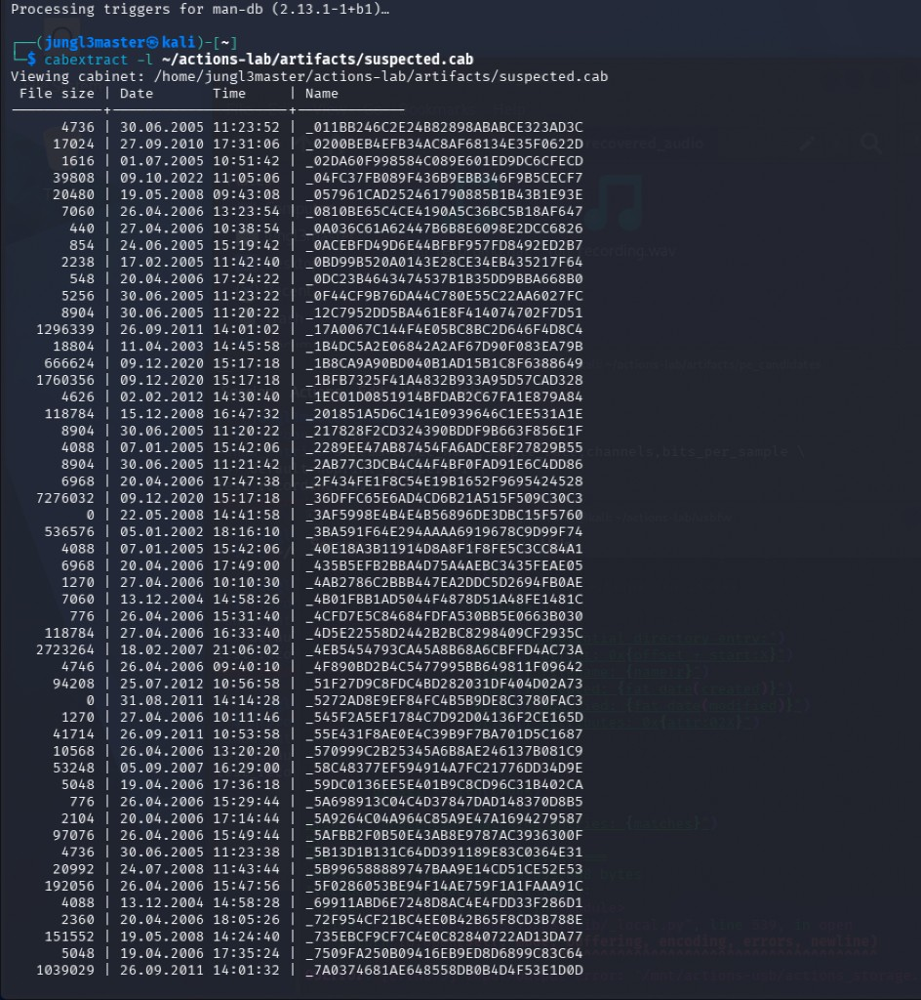
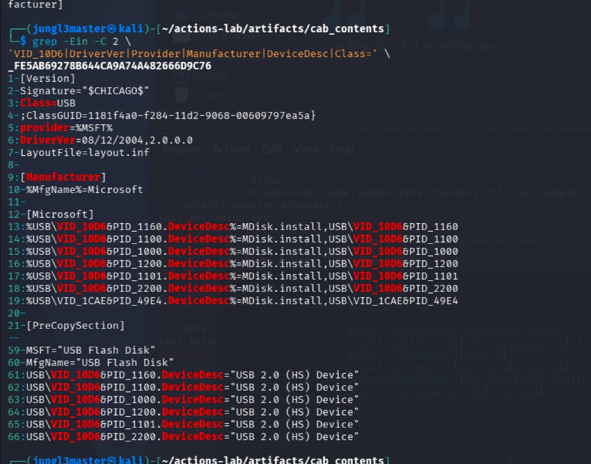
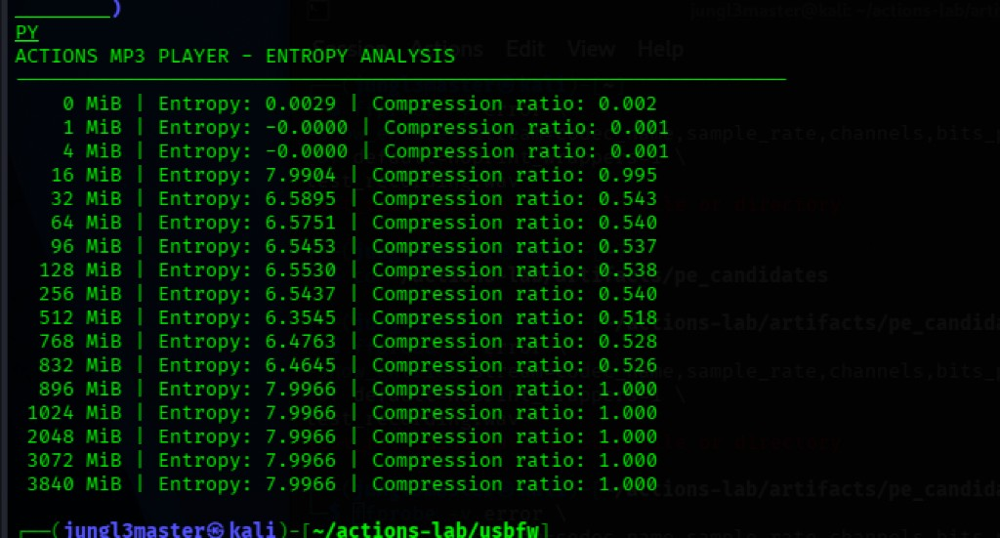
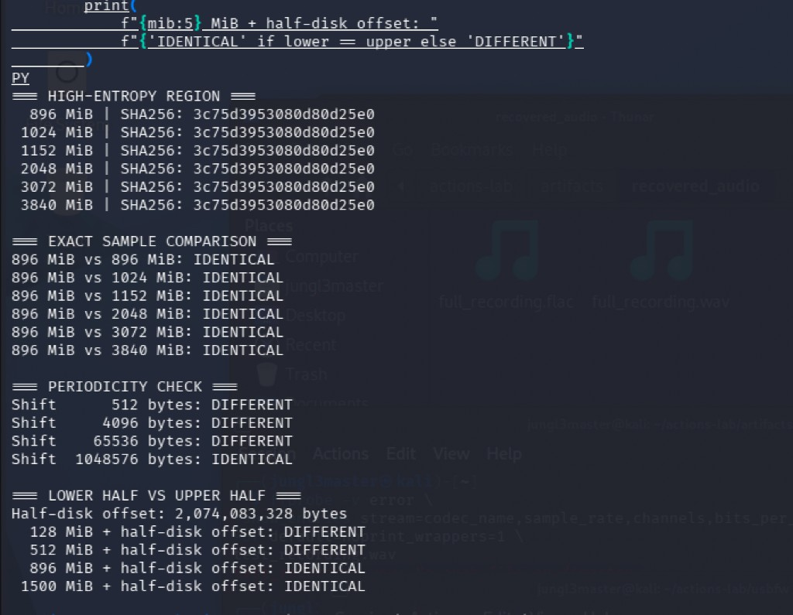
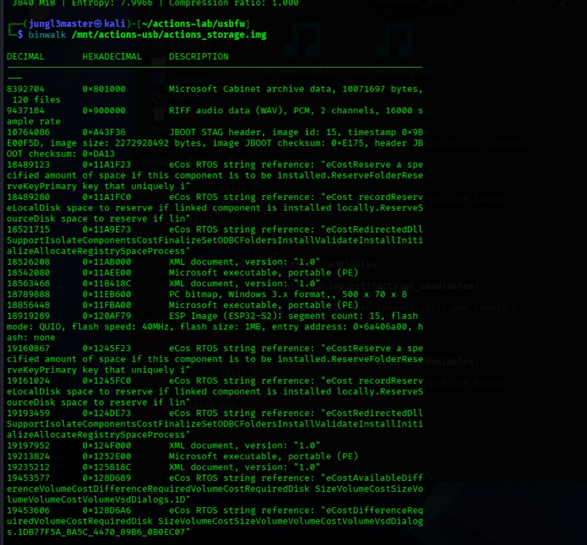
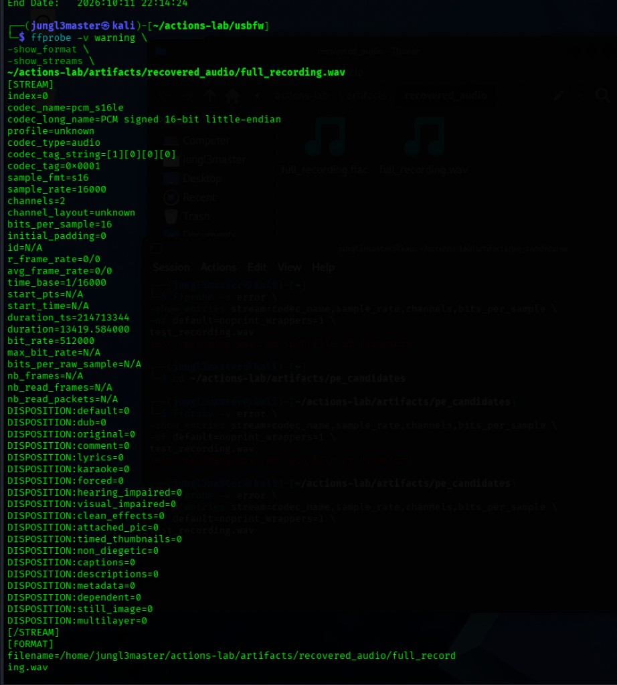
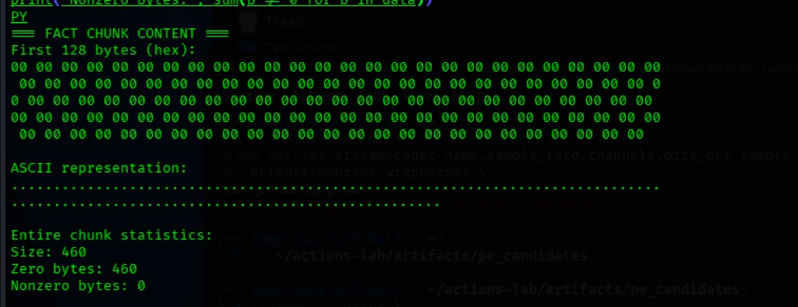

01 / Introduction
It started with an MP3 player
About a year ago, I bought a cheap, generic MP3 player on eBay. I liked the idea of a dedicated music device, something separate from my phone. There was just one problem: I didn't particularly enjoy using it.
The buttons were clunky, the interface felt outdated, and navigating between songs was more frustrating than it needed to be. Eventually I started wondering whether I could do something about it myself. As a cybersecurity student getting deeper into reverse engineering, this looked like a useful opportunity: identify the processor, extract the firmware, analyze it with Ghidra, and determine whether I could modify the interface or get Rockbox running on it.
Rockbox is an open-source firmware replacement for certain digital audio players. I had no idea whether this particular device would support it, but figuring that out was part of the appeal. I named the project White Buffalo Roam, after the album I especially wanted to listen to on the player. At the time, I thought this would be a small firmware reverse-engineering experiment. I had no idea what I was about to find.
02 / Acquisition
Taking a look beneath the interface
The first challenge was figuring out what was actually inside the device. It identified itself as an Actions Semiconductor USB device with the identifier 10d6:1101. I started researching Actions processors and available firmware tools, but before attempting anything potentially destructive I wanted a backup of the existing storage.
I connected it to a separate laptop running Kubuntu Live and created a raw image of the approximately 4 GB storage device. This wasn't a normal file transfer. Rather than copying whatever appeared in the music library, I copied the bytes exposed through the device's USB mass-storage interface. That distinction would turn out to be incredibly important.
I transferred the resulting image into a Kali Linux virtual machine and began examining its contents. The image was exactly 4,148,166,656 bytes. I initially expected an ordinary filesystem containing music, configuration files, or useful firmware clues. Instead, the first thing I discovered was that something wasn't right.
03 / Filesystem failure
The first strange discovery
The device's partition table indicated that a FAT32 filesystem should exist. Under normal circumstances, a computer should be able to recognize and navigate it.
When I tried examining the partition, the filesystem tools returned an error: fsck.fat reported that the logical sector size was zero. The sector where the FAT32 boot record should have been located contained nothing but zeros. The conventional backup boot-sector location was also zeroed.
From the perspective of a normal filesystem, something was clearly wrong. But that didn't necessarily mean the underlying storage was empty. A filesystem is an organizational structure. Destroying or corrupting that organization doesn't automatically destroy the data underneath it. I couldn't navigate the storage normally, but I could still examine its individual bytes. So that's what I did.


0x1be: type 0b (FAT32) with a valid 55 aa boot signature, even though the volume's boot record itself was zeroed.

04 / Embedded software
There was more data than I expected
I began scanning the image with Binwalk. Almost immediately it identified a Microsoft Cabinet archive. I extracted it and found 120 archived entries, including Windows executables, multimedia-related libraries, USB drivers, and components associated with Actions Semiconductor devices.
This wasn't what I had originally expected while researching an MP3 player's firmware. There were references to firmware-update mechanisms and device drivers, but nothing that established malicious activity. Still, it gave me another reason to keep investigating.


MSCF confirmed at the carved archive offset before extraction.



VID_10D6&PID_1101.05 / Storage structure
The storage that kept repeating
While examining different regions of the image, I noticed that large sections exhibited extremely high entropy. High-entropy data can indicate compression, encryption, or other complex binary content. Initially I considered those explanations—but something didn't add up. Different sections appeared to share almost identical statistical characteristics.
I stopped looking only at entropy and started comparing the actual bytes. The result surprised me: more than 78% of the storage image consisted of repeated copies of the same 1 MiB block. One continuous region alone contained 3,102 consecutive, byte-identical blocks. I verified the repetition through direct comparisons rather than matching entropy values alone.
I still can't explain why such a large portion of the storage contains repeated data. It could relate to manufacturing, testing, the storage controller, or some other process I haven't yet identified. What it did demonstrate was how misleading a single measurement can be. Data that looks random isn't necessarily unique. And an apparently empty device isn't necessarily empty.




06 / Unexpected artifact
Then I found something I wasn't looking for
While reviewing Binwalk's results, one entry caught my attention: RIFF audio data (WAV), PCM, 2 channels, 16000 sample rate.
At first glance it was simply another file signature. But its location was interesting—the signature appeared at exactly 32 MiB into the raw storage image. The bytes formed a valid WAV file header. The declared audio parameters were internally consistent, and the file appeared to extend across a substantial portion of the storage.
Then I calculated its duration: 3 hours, 43 minutes, and 39 seconds. Nearly four hours of audio on an MP3 player whose interface hadn't shown me any recordings. I carved the file directly from the raw image and opened it in an audio player. It worked. What started as an investigation into modifying an outdated music player's interface had suddenly become a completely different kind of research project.


actions_storage.img.



07 / Content and privacy
Listening to the recording
I didn't know what to expect when I pressed play. The recording wasn't particularly clear. There was a persistent background hum, occasional static-like noise, and sounds resembling objects being moved or placed on surfaces. At times I heard sharp clunks and rustling. Then, around the ten-minute mark, I heard what sounded like a distant human voice.
The voice was quiet, partially obscured by background noise, and difficult to understand. Elsewhere in the recording I encountered additional speech-like sounds. Some of it sounded to me like it might be in an East or Southeast Asian language, but I haven't been able to identify the language reliably. I don't know what is being said, where the recording was made, or who—or what—originally recorded it. Those questions are now the part of this investigation I'm most interested in answering.
I've started exploring local speech-recognition tools, including Whisper, to locate sections that might contain intelligible dialogue. Automatic transcription is far from perfect with quiet voices and constant background noise, and these systems can invent words even when the audio is unintelligible. I don't want to mistake an AI-generated transcript for something somebody actually said. My next step is to work with someone fluent in the language, once it can be identified.
For now, the content of the recording remains an unanswered question. And because the audio may contain private conversations, I've decided not to publish the recording itself.
08 / Interpretation
Why was it there?
This is the question I keep coming back to. The MP3 player has a built-in voice recorder, so it's possible the audio originated from the device itself. But possible isn't the same as proven. The recording could have been created with the player's microphone, copied during manufacturing, included as test material, or left behind by some earlier process. I haven't established which explanation is correct.
The WAV has structural properties that might eventually help. Its audio data begins exactly 512 bytes after the start of the file, following a sector-aligned header containing a large zero-filled chunk. That could be consistent with software designed to write audio efficiently to block storage. If I eventually create a controlled recording using the player's built-in microphone, I can compare the resulting WAV structure against the recovered file. A close match could help narrow down its origin—but even then, it wouldn't tell me who recorded it or when.
Was the recording deliberately hidden? The recording was hidden from the normal user experience, but I haven't established that anyone intentionally concealed it. Damaged or missing filesystem metadata could explain why the player didn't display it. That is a central idea in digital forensics: data can remain recoverable even when directory entries or other identifying information are gone.
Imagine deleting files from a device, resetting it, or preparing it for someone else. You might reasonably assume that once the interface stops displaying your information, the information is gone. Depending on what happened during deletion, formatting, or resetting, some data may remain accessible through lower-level analysis. This phenomenon is known as data remanence.
I'm not claiming that my MP3 player demonstrates an improper factory reset or that somebody previously owned it. I simply don't have the evidence to establish that. The device was advertised as new when I purchased it, but I'd owned it for approximately a year before beginning this investigation, and I haven't established when the recovered recording was made.
What I can demonstrate is narrower and clearer: I recovered a complete, playable recording from the raw USB-accessible storage despite being unable to locate it through the player's normal interface. Everything beyond that requires more investigation.
09 / Reflections
What this investigation taught me
When I started, my goal was to understand an unfamiliar processor and experiment with custom firmware. I ended up learning something broader about digital forensics: a filesystem isn't the same thing as the underlying data; file signatures need validation before they can be trusted; high entropy doesn't automatically mean encryption; and ordinary consumer electronics can contain storage structures that aren't obvious from their interfaces.
Most importantly, I learned the value of following evidence rather than forcing an investigation toward its original objective. I wanted to reverse-engineer firmware. Instead I found a recording—and rather than ignoring it because it wasn't part of the plan, I followed the unexpected evidence.
It's easy to turn an unexplained recording into a dramatic story about malware or secret surveillance. The actual evidence doesn't support those conclusions. At least, not right now. The recording exists. It's playable. It contains sounds consistent with environmental activity and possibly human speech. Its origin remains unknown. Acknowledging that uncertainty is part of doing responsible security research.
There are still several questions I want to answer: what the voices are saying, whether the recording originated from the player's own microphone, what happened to the damaged filesystem, and why such a large portion of the storage contains repeated data. I also haven't forgotten the original goal—identifying the exact Actions processor, exploring its firmware, and seeing whether a Rockbox port is feasible. For now, the recording has taken priority.
I started this project because I wanted a better MP3 player. Now I have nearly four hours of unexplained audio, an unusual storage image, and considerably more questions than when I began. I still don't know what the voices are saying. I still don't know why the recording was there. But I know it was there—even when the interface told me otherwise.
Investigation ongoing.
10 / Source record
Full digital forensics investigation
This article focuses on the story behind the investigation. The complete technical research—including acquisition commands, storage offsets, Python scripts, binary analysis, SHA-256 results, terminal outputs, and the WAV recovery process—is available on GitHub.
White Buffalo Roam — Full Digital Forensics Investigation